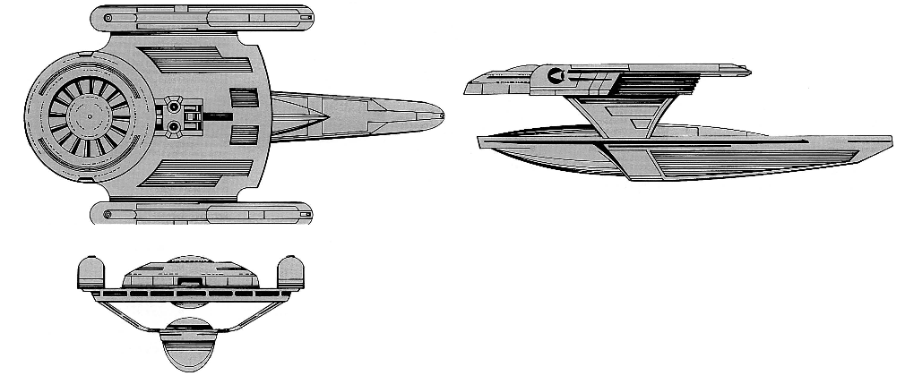

Oberth-class Scout (UFP)

Battle Stats
Engines and Superstructure
Total Power Units - 30 (Warp Drive - 2x12, Impulse - 6)
MPR - 2/1
Superstructure - 9
Maximum Warp - 1
Industry Points to Build - 2
Beam Weapons (Phasers)
Max Power - 5
Firing Chart - T
Arcs - 2f/p/s, 1a
Bonuses - +2(1-10) +1(11-18)
Deflector Shields
Max Shield Power - 10
SPR - 1/3